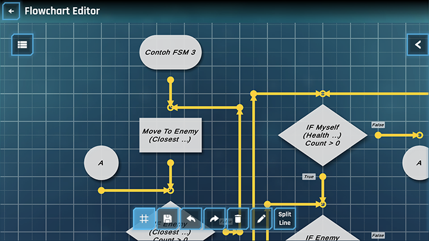
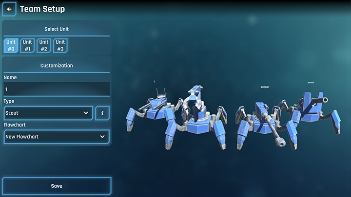

Unity Developer | Multiplayer | AR & VR
Flowchart League is a strategy game where users have full control to design and program the behavior of their units using flowchart symbols. Through this mechanism, users can create complex and varied strategies to tackle different battle situations. Users can assemble a team composed of various types of units, each with unique abilities and roles, to create optimal formations and effective tactics. You can download the game here.
I developed Flowchart League entirely on my own, from concept to completion. This project was a comprehensive undertaking where I handled every aspect of development to ensure a cohesive experience for players. The game utilizes Firebase as its backend, enabling smooth data management and secure storage for player progress and other in-game data.
For the audio, I sourced original sound effects from various real-life recordings found online and edited them using Audacity to create a unique auditory experience that enhances the gameplay. The game's 3D assets were modeled in Blender, and I hand-painted the textures to add a personal, artistic touch that complements the game's visual style. Additionally, all 2D designs, such as UI elements and icons, were designed in CorelDRAW to maintain consistency across the visual elements. This project allowed me to bring together a variety of skills, from backend integration to art and sound design, all while creating an engaging learning tool for players interested in programming logic.
In this game, there are several key features that form part of the core mechanism of this game. These features include:
This feature is used to design the action flow for units in the game. Through a drag-and-drop interface, users can compose, save, and organize the action flow of units using flowchart symbols. This feature simplifies the process of creating logical flows by providing easy-to-understand visualizations, allowing users to design unit logic flows more easily. The flowcharts created will then be converted into Finite State Machine (FSM) models and used to manage transitions between various states in the game, ensuring that units can transition between states dynamically according to the specified conditions.
Units in this game refer to characters or entities that users can control. Each unit has unique roles and abilities and can be programmed to perform various actions in battle according to instructions given by users using flowchart symbols. There are various types of units that users can choose from, each with different skills and statistics. The FSM manages how each unit transitions between various states, such as attacking, moving, or defending, based on the conditions set by the user in the flowchart. For example, the FSM can transition from a MoveTo state to a FleeFrom state when detecting an enemy unit of a specific type. This means the unit type can be one of the conditions triggering the FSM transition, allowing for more dynamic and responsive strategies in the game.
After composing the flowcharts and assembling the team, users can start the battle simulation to test the
effectiveness of their strategies. In the battle simulation, the user's team will face off against an opposing
team with varied strategies in each challenge. In the battle simulation, the flowcharts applied to each unit
will be transformed into FSM models. The FSM has full control over each unit's behavior in battle, managing
state transitions based on the conditions specified in the flowchart. Users can observe the results of the
battle simulation to evaluate their strategies, identify strengths and weaknesses, and make adjustments if
necessary.
Each challenge can also have unique battle rules. These rules govern various aspects of the battle, such as the
number of team members, maximum endurance limits, attack power multipliers, and other parameters. With these
rules, each challenge becomes more diverse and challenging, as users must adapt their strategies to the set
parameters to achieve victory. This encourages users to develop different strategic approaches depending on the
battle conditions in each challenge.